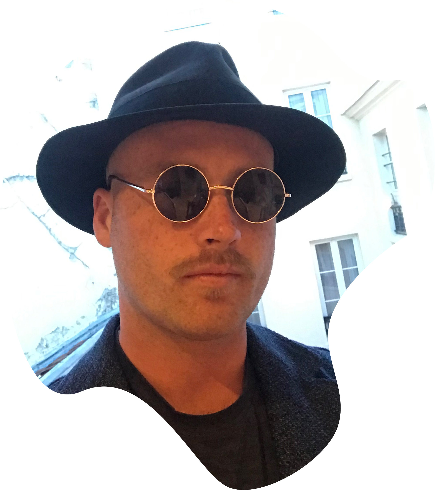

About Me

I am a contemporary artist and IT professional, having worked in IT Services as an IT Help Desk Officer
at The University of Melbourne for a few years from 2013 before taking a vocational break to focus on my
Art career in 2015.
I earned a Master of Contemporary Arts from The Victorian College of the Arts,
The University of Melbourne in 2017 and undertook a short course at General Assembly in Front End Web Development
in the same year.
I have exhibited in over 35 group exhibitions, held over 14 solo
exhibitions in Melbourne, Dallas, Lisbon, Copenhagen and New York City, and collaborated in 3 duo shows. My most notably recent
exhibition was held in Copenhagen as a collaboration between myself and Danish artist
Anna Bak titled
FSC BATTLE #6 – G.ON.E. BY JOSEPH FLYNN VS. ANNA BAK.
During my final year of studies at The VCA (2017), I started a creative studio and exhibition space, titled
Memphis gardens, which
unfortunately closed in 2019. I then started working as a freelance creative for art, architecture and design companies
such as ENESS and OCTA
assisting with installations in Melbourne and around the world.
During the outbreak of COVID-19 I was working on an
installation in Shanghai, China. I had to leave my work to return to Australia and decided that I needed to find a more secure
field of employment, at which point I decided to return to IT and study my current course in Full Stack Web Development
at Monash Coding Bootcamp.